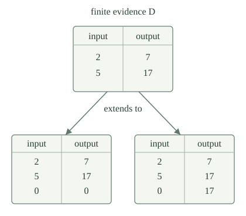

A finite fragment is a finite list \(D\) of pairs \((x,y)\) of natural numbers, with the consistency condition that two pairs having the same first coordinate also have the same second coordinate. Identical repeated pairs are allowed. Its associated partial function \(\delta_D\) returns the recorded \(y\) on a listed input \(x\), and is undefined on every unlisted input.
For partial functions \(f,g\), write \(f\sqsubseteq g\) when every defined value of \(f\) is the same defined value of \(g\):
Thus \(\delta_D\sqsubseteq g\) requires the listed observations, but places no condition on \(g\) at an unlisted input. This is graph inclusion, rather than the equality of partial functions used in extensional index properties.

Use the established finite-list coding. For a natural code \(d\), decode its list of natural numbers and unpair each entry, obtaining the finite pair-list \(D_d\). Every finite pair-list has such a code. Let \(\operatorname{Valid}(d)\) say that \(D_d\) is consistent. Comparing every two entries is a finite test, so validity is decidable.
Define \(\delta_d(x)\) by looking for the first pair in \(D_d\) with first coordinate \(x\), returning its second coordinate if found, and otherwise remaining undefined. This definition works even on invalid codes; on valid codes it represents every pair in the fragment. A single paired-input procedure performs these finite scans and then either returns the found value or runs forever. The parameter theorem therefore supplies one fixed index \(v\) and a fragment compiler
The map \(u\) is primitive recursive: it inserts a finite numerical parameter into program text. It does not wait for any other program to terminate. In particular, every finite fragment is a partial computable function. The empty list represents the nowhere-defined function.
Take \(D=[(2,7)]\). If \(D\) is accepted as positive evidence for a program computing \(g\), must \(g(0)\) be undefined? Distinguish this from what the fragment program \(u(d)\) does at zero.
No. Both the fragment \([(2,7)]\) itself and the larger fragment \([(2,7),(0,17)]\) extend the observation. Their associated partial functions differ at zero. Positive evidence \(\delta_D\sqsubseteq g\) permits either possibility there.
The particular program \(u(d)\) computes exactly \(\delta_D\), so it is undefined at zero. That fact about the chosen representative is not an additional condition imposed on every extension of its table.
Let \(b(k,e,x)\) be the bounded evaluator, with \(b(k,e,x)=y+1\) certifying \(\varphi_e(x)\downarrow=y\). Define the finite match test
This is a total computable test. For every valid \(d\),
The decoded list and all searches below \(t\) are finite, so each test finishes. A successful test certifies the required value at every listed input. Conversely, graph inclusion supplies a computation certificate for each of the finitely many pairs. Choose \(t\) greater than all their resource bounds. That common finite bound makes the test succeed. Consistency ensures that the listed pairs are exactly the graph of \(\delta_d\).
For the empty list the test is already true at \(t=0\), as it should be: the empty graph is included in every partial function. This argument uses finite certificates, without deciding divergence at an unlisted input.
Fix a set \(A\subseteq\mathbb N\) of program indices. Assume that \(A\) is c.e., and choose one recognizer index \(r\) with \(A=W_r\). Write
using the uniform finite stages. The test \(H_r\) is computable, it is monotone in \(t\), \(H_r(j,0)\) is false, and \(\exists t\,H_r(j,t)\) is equivalent to \(j\in A\).
Also assume that \(A\) is extensional: if \(\varphi_e\simeq\varphi_d\), then \(e\in A\) exactly when \(d\in A\). The recognizer may inspect numerical indices; extensionality restricts which answers it can ultimately give. It says nothing about how quickly those answers appear.
For proposed self-index \(j\), old index \(e\), extension index \(d\), and input \(x\), define the switch procedure \(S(r,j,e,d,x)\) as follows. Search codes \(\langle a,\langle t,k\rangle\rangle\) of triples \((a,t,k)\) in increasing numerical order. A triple is successful if either
or
At the first successful code, return \(b(k,e,x)-1\) in the first case and \(b(k,d,x)-1\) in the second. If no code succeeds, remain undefined. Each candidate test terminates; the search therefore gives a jointly partial recursive procedure. The two tags make its output rule unambiguous.
The first kind of certificate offers a value of \(\varphi_e(x)\) immediately. The second offers a value of \(\varphi_d(x)\) only after the recognizer accepts \(j\). This is a dovetailed search, so a divergent old computation cannot prevent the second offer.
Fix once a selector supplied by self-reference for partial families. It gives a fixed program index \(q_S\), and the primitive-recursive switch index
If \(\varphi_e\sqsubseteq\varphi_d\), its behavior satisfies:
The procedure just defined is jointly partial recursive in the self-index, the coded parameters, and the runtime input. The partial-family theorem thus chooses a single \(q_S\) before \(r,e,d,x\) vary. Its selector has the displayed specialization form and is primitive recursive.
If the self-index is never accepted, no triple with tag one succeeds. A tag-zero certificate exists exactly on the domain of \(\varphi_e\), and returns its correct output. Thus the first equality includes divergence.
If the self-index is accepted, a finite stage witnesses that event. A tag-one certificate then exists at every input where \(\varphi_d\) is defined. Any successful tag-zero certificate returns the same output, since the old graph is included in the new one. At an input where \(\varphi_d\) is undefined, inclusion also makes \(\varphi_e\) undefined, so neither tag can succeed. This proves the second equality of entire partial functions.
If \(A=W_r\) is extensional, \(e\in A\), and \(\varphi_e\sqsubseteq\varphi_d\), then \(d\in A\).
Put \(j=\sigma(r,e,d)\). Suppose first that \(j\notin A\). The first case of makes \(\varphi_j\simeq\varphi_e\). Extensionality and \(e\in A\) then imply \(j\in A\), a contradiction. Hence \(j\in A\).
The second switch case now gives \(\varphi_j\simeq\varphi_d\). Extensionality transfers \(j\in A\) to \(d\in A\). The argument does not test whether \(j\) will be accepted: the two alternatives occur in the proof of the already specified program.
The cutoff procedure on parameters \(r,j,e\) and input \(x\) is
The first operation is the terminating stage-\(x\) test. There is a fixed index \(q_C\), selected once by the same partial-family theorem, for which the cutoff index
is primitive recursive jointly in \(r,e\).
The stage test is computable in all its numerical inputs. If it fails, universal evaluation runs the old program; if it succeeds, a fixed nowhere-defined program is used. These rules are jointly partial recursive, so the partial-family theorem supplies the displayed uniform selector. The index constructor does not run the program whose text it produces.
Suppose \(A=W_r\) is extensional and \(e\in A\). Then \(j=\kappa(r,e)\) belongs to \(A\), and \(\varphi_j\sqsubseteq\varphi_e\). Moreover, there is a bound \(t\) such that
Consequently the graph of \(\varphi_j\) is finite.
If \(j\notin A\), no finite stage contains it. Every input therefore takes the old-computation branch, giving \(\varphi_j\simeq\varphi_e\). Extensionality contradicts \(e\in A\). Thus \(j\in A\).
Let \(t\) be the first stage with \(H_r(j,t)\). For \(x<t\), that stage-\(x\) test fails, so the cutoff program runs exactly \(\varphi_e(x)\). For \(x\ge t\), stage monotonicity makes the test succeed, so the program remains undefined. This proves the exact displayed restriction. Its graph is included in the old graph and has at most \(t\) pairs, one for each possible input below \(t\). Some of those old inputs may themselves be undefined; no decision about them is needed.
The cutoff map uniformly supplies an index of an accepted finite partial function. Does this mean that one can computably recover the complete finite graph from every index known to compute a finite partial function?
No. Consider the uniform partial programs \(h_e\) which, on input zero, wait for \(\varphi_e(e)\) to halt and then return zero, and which remain undefined on all other inputs. Each graph is finite: it is either empty or the singleton \(\{(0,0)\}\). These are the waiting programs for the fixed partial function \(g\) returning zero only at input zero. Universal evaluation, the finite input test, and specialization give their specified total computable index map \(\eta(e)\), with \(\varphi_{\eta(e)}\simeq h_e\).
If an algorithm returned a code for the entire graph from every finite-function index, apply it to \(\eta(e)\). Allowing that algorithm to diverge on infinite-function indices would not help: every program in this family is finite. Testing whether its finite output table contains \((0,0)\) would decide the diagonal halting set. That contradicts its undecidability. The cutoff theorem supplies a finite program, without supplying a terminating method for deciding which of its finitely many possible inputs actually halt.
An effective finite-fragment basis for \(A\subseteq\mathbb N\) is a c.e. set \(B\) of valid fragment codes satisfying
The enumeration requirement concerns the allowed tables, before any particular candidate program is examined. Merely saying that every accepted program contains some finite evidence would omit this effective requirement.
For an extensional c.e. set \(A\), define the canonical fragment family
This family is c.e., and it is an effective finite-fragment basis for \(A\).
Validity is decidable and \(u\) is total computable, so computable preimages and intersection show that \(B_A\) is c.e.
If \(e\in A\), gives an accepted finite partial function \(\varphi_j\sqsubseteq\varphi_e\). Its finite graph can be written as a consistent finite list, with some valid code \(d\). The fragment compiler computes exactly that graph, so \(\varphi_{u(d)}\simeq\varphi_j\). Extensionality gives \(u(d)\in A\), hence \(d\in B_A\).
Conversely, if \(d\in B_A\) and \(\delta_d\sqsubseteq\varphi_e\), the accepted program \(u(d)\) has graph included in \(\varphi_e\). implies \(e\in A\). Choosing a code for an already known finite graph in this mathematical argument is an existence claim; the previous question explains why it is not a uniform graph-extraction algorithm.
A set \(A\subseteq\mathbb N\) is c.e. and extensional if and only if it has an effective finite-fragment basis. Equivalently, a property of partial computable functions can be recognized from program indices precisely when an effectively enumerable family of finite positive tables certifies all and only its positive instances.
The forward implication is . For the converse, let \(B\) be a c.e. basis and choose a recognizer index \(r_B\) for it. On input \(e\), search codes of triples \((d,s,t)\) for
Every candidate test is total computable. If \(e\in A\), a basis fragment \(d\) exists; its membership in \(B\) appears at some stage \(s\), and supplies a common computation bound \(t\). The search reaches a successful triple and halts. Conversely, a successful triple gives \(d\in B\) and \(\delta_d\sqsubseteq\varphi_e\), so the basis equivalence implies \(e\in A\). This is a recognizer for \(A\).
Finally, equality of the partial functions computed by \(e\) and \(e'\) preserves every graph-inclusion test \(\delta_d\sqsubseteq\varphi_e\). The basis equivalence therefore gives extensionality. Both implications include the empty property and the property containing all partial computable functions; no nontriviality assumption is needed.
The same canonical finite bases extend from recognized properties to transformations of whole partial functions. The Myhill–Shepherdson theorem characterizes total computable extensional program transformations by one jointly enumerable family of coherent finite positive rules, with a uniquely determined extension to arbitrary partial functions.
The index sets of programs halting at zero, and of programs returning seventeen on some input, are c.e. More generally, for any fixed valid finite fragment \(D\), the property \(\delta_D\sqsubseteq\varphi_e\) has a c.e. index set.
For the property that \(\varphi_e(0)\) is defined, use all singleton fragments \([(0,y)]\), with \(y\in\mathbb N\). For the property that some input returns seventeen, use all singleton fragments \([(x,17)]\), with \(x\in\mathbb N\). Each family is effectively enumerable, and a program extends one of its fragments exactly when it has the required property. thus recovers the recognizers in halting at zero and ever producing seventeen.
For a fixed valid fragment \(D\), use the family consisting of that one fragment; equivalently, apply directly. Requiring several specified successful computations still asks only for finitely many positive certificates. Their existence gives recognition, while Rice’s theorem still forbids deciding every nontrivial such behavioral property.
The extensional index sets of total partial computable functions and of partial computable functions whose domain has exactly one element are not c.e.
The constant-zero function is total. If totality had a c.e. index set, it would have an accepted finite subfunction by . That subfunction would itself have to be total, but its finite domain cannot be all of \(\mathbb N\). This contradiction gives another explanation of the totality obstruction.
For the singleton-domain property, take the partial function which returns zero only at input zero. It has an index by the fragment compiler and satisfies the property. Its extension returning zero at inputs zero and one is also partial computable, but has a two-element domain. If the property were c.e., would preserve membership under this extension, a contradiction.
The two failures differ: totality is upward closed among partial computable extensions, but no finite subfunction is total. An exact singleton domain already fails upward closure. Neither argument restricts the program inputs to a promise that they are total; the theorem concerns indices of arbitrary partial computable functions.